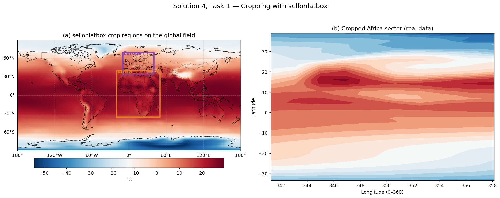
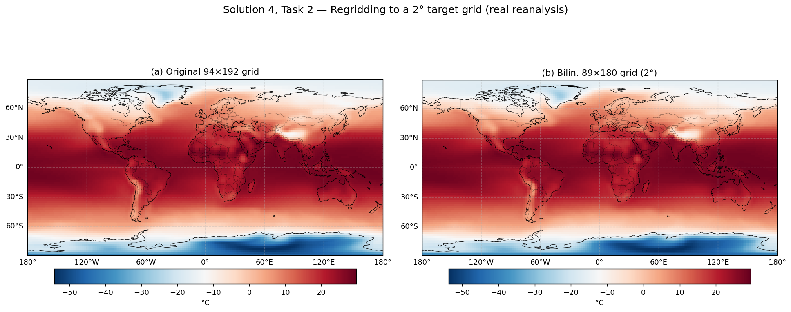
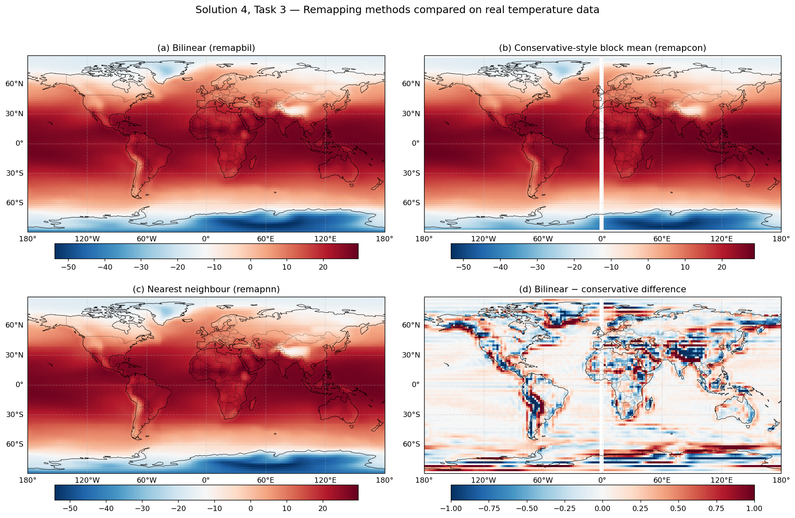
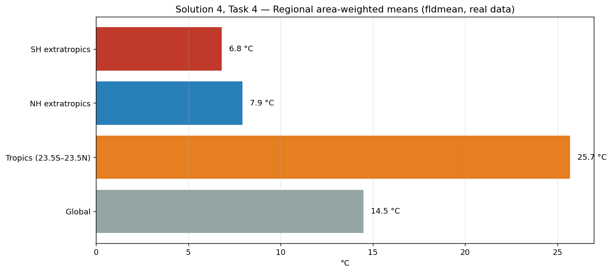
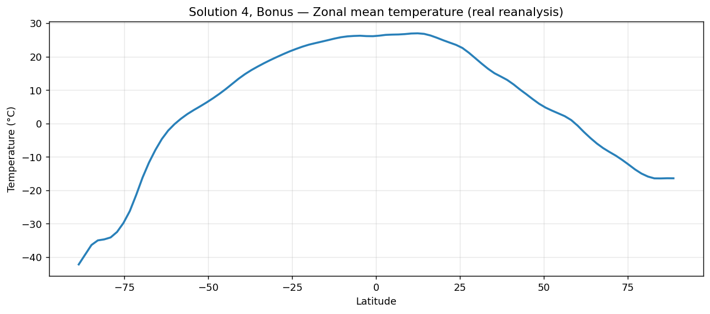

Solution 4: Spatial Analysis#
Task 1: Crop Data to a Specific Region#
Commands:#
cdo sellonlatbox,-20,50,-35,40 ../datasets/tas_sample.nc tas_africa.nc
cdo sellonlatbox,-10,40,35,70 ../datasets/tas_sample.nc tas_europe.nc
Answers:#
Boundary inclusivity:
sellonlatboxuses inclusive boundaries — grid cells with centers exactly on the boundary are included.0–360 longitude: The operator
sellonlatboxworks with -180/180 longitude. For 0–360 data, usesellonlatboxwith the same syntax (CDO automatically converts). Alternatively, usesellonlatbox2for data that spans the 0 meridian.Crop using a mask file: Use
cdo maskregionwith a shapefile or a mask field:cdo maskregion,region_id input.nc output.nc

Fig. 30 Africa and Europe crop boxes from sellonlatbox shown on the real global temperature field.#
Task 2: Regrid from 1° to 2° Resolution#
Target grid file (target_grid.txt):#
gridtype = lonlat
xsize = 180
ysize = 90
xfirst = -179.0
xinc = 2.0
yfirst = -89.0
yinc = 2.0
Command:#
cdo remapbil,target_grid.txt ../datasets/tas_sample.nc tas_2deg_bil.nc
Answers:#
Grid cell comparison:
Original: 360 × 180 = 64,800 cells
2° grid: 180 × 90 = 16,200 cells
Reduction: 75% fewer cells
Global mean change: The global mean should be well-preserved with bilinear interpolation (small diff), but conservative remapping would preserve it even more precisely.
Check new grid:
cdo griddes tas_2deg_bil.nc

Fig. 31 Original reanalysis grid and the 2° target grid produced by bilinear interpolation.#
Task 3: Compare Bilinear vs Conservative Remapping#
Commands:#
cdo remapbil,target_grid.txt ../datasets/tas_sample.nc tas_bil.nc
cdo remapcon,target_grid.txt ../datasets/tas_sample.nc tas_con.nc
cdo remapnn,target_grid.txt ../datasets/tas_sample.nc tas_nn.nc
cdo sub tas_bil.nc tas_con.nc tas_diff_bil_con.nc
cdo fldmean tas_diff_bil_con.nc
Answers:#
Differences between methods:
Bilinear (remapbil): Weighted average of 4 nearest grid points. Smooth, good for continuous fields like temperature.
Conservative (remapcon): Area-weighted average that preserves the global integral. Best for flux fields (precipitation, energy).
Nearest-neighbor (remapnn): Assigns value of closest grid cell. Fast, preserves original value distribution, good for categorical data.
Best use cases:
Smooth variables (temperature, pressure): bilinear
Fluxes/precipitation: conservative
Categorical/land-use: nearest-neighbor
Conservative remapping preserves integrals because each target cell value is the area-weighted average of overlapping source cell fractions. The total integrated value over the domain is conserved.
When to use nearest-neighbor: For categorical data (land mask, soil type), when speed is critical, or when preserving exact original values is important.
Largest differences: Typically over complex terrain (mountainous regions) and at coastlines, where smoothing differs most between methods.

Fig. 32 Bilinear, conservative-style and nearest-neighbour remapping compared on real temperature data, with their difference field.#
Task 4: Compute Regional Averages#
Commands:#
cdo fldmean ../datasets/tas_sample.nc tas_global.nc
cdo fldmean -sellonlatbox,0,359,-23.5,23.5 ../datasets/tas_sample.nc tas_tropics.nc
cdo fldmean -sellonlatbox,0,359,23.5,90 ../datasets/tas_sample.nc tas_nh_extratropics.nc
cdo fldmean -sellonlatbox,0,359,-90,-23.5 ../datasets/tas_sample.nc tas_sh_extratropics.nc
Answers:#
Highest mean temperature: The tropics (23.5S–23.5N) have the highest mean temperature due to maximum solar insolation.
Does
fldmeanapply area weighting? Yes, by defaultfldmeanapplies cosine-of-latitude weighting. Verify by checking:cdo fldmeanvscdo fldmean -weights— area-weighted gives more weight to equatorial cells.Unweighted average: Use
fldavg(arithmetic mean, no area weighting).fldmeanvsfldsum:fldmean: area-weighted spatial average (unit preserved)fldsum: area-weighted spatial sum (units * m² or scaled)fldsumis useful for computing total precipitation over a region

Fig. 33 Area-weighted regional means: global, tropics and both extratropics, from real reanalysis data.#
Bonus Challenge#
Commands:#
# Create 5° grid
cat > grid_5deg.txt << 'EOF'
gridtype = lonlat
xsize = 72
ysize = 36
xfirst = -177.5
xinc = 5.0
yfirst = -87.5
yinc = 5.0
EOF
cdo remapcon,grid_5deg.txt tas_africa.nc tas_5deg.nc
cdo zonmean tas_5deg.nc tas_zonal.nc
Python zonal mean plot:#
import xarray as xr; import matplotlib.pyplot as plt
ds = xr.open_dataset('tas_zonal.nc')
plt.figure(figsize=(8, 4))
plt.plot(ds.lat, ds.tas.mean('time'), 'b-')
plt.xlabel('Latitude'); plt.ylabel('Temperature (K)')
plt.title('Zonal Mean Temperature')
plt.grid(alpha=0.3); plt.tight_layout()
plt.savefig('zonal_mean.png', dpi=150)

Fig. 34 Zonal mean temperature by latitude from the real reanalysis field.#